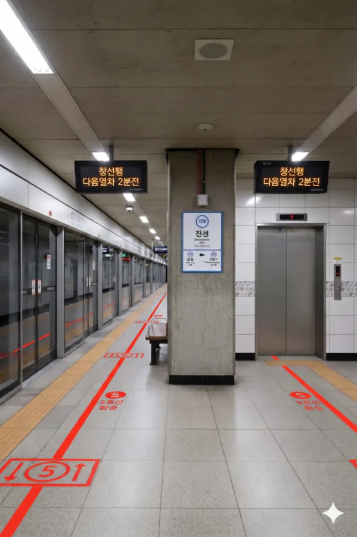
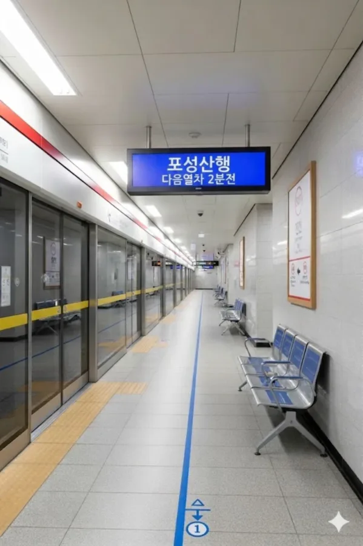

효빈 도시철도 1호선 119번 및 효빈 도시철도 5호선 507번. 효빈광역시 동구 전천동 1-1지하 소재이다.
효빈시의 남북을 잇는 1호선과 동서를 잇는 5호선이 만나는 주요 환승역이다.
|
1
5
전천역 출구 정보
|
||
|---|---|---|
| 번호 | 주요 시설 및 방향 | 비고 |
| 1 | 전천교차로 | |
| 2 | 전천교차로, HSCO 제2전시장 | HAF 코스프레 존 (보조전시장) |
| 3 | 개포초, 해서초, 해서중, 효빈북부공업고 | |
| 4 | 선자대학교 | |
| 5 | 1-5호선 환승통로2 | |
| 6 | 선자대학교 | |
| 7 | 전천동행정복지센터 | |

| 보몽 ↑ | ||||
| 하행 | ㅣ | ㅣ | ㅣ | 상행 |
| ↓ 천왕사 | ||||
| 상행 | 1 효빈 도시철도 1호선 (완행/급행) | 창선 · 곽암해수욕장 · 곽산 방면 (급행 정차) |
| 하행 | 1 효빈 도시철도 1호선 (완행/급행) | 천왕사 · 장선 방면 (급행 정차) |

| 고속버스터미널 ↑ | |||
| 하행 | ㅣ | ㅣ | 상행 |
| ↓ 전천중앙 | |||
| 상행 | 5 효빈 도시철도 5호선 | 청덕공원 방면 |
| 하행 | 5 효빈 도시철도 5호선 | 도변 · 포성산 방면 |
| 전천역 이용객 통계 | ||||
|---|---|---|---|---|
| 연도 | 1호선 | 5호선 | 총합 | 비고 |
| 2020년 | 11,426명 | 9,356명 | 20,782명 | |
| 2021년 | 11,554명 | 9,461명 | 21,015명 | |
| 2022년 | 13,435명 | 11,002명 | 24,437명 | |
| 2023년 | 13,671명 | 11,195명 | 24,866명 | |
| 2024년 | 13,911명 | 11,392명 | 25,303명 | |